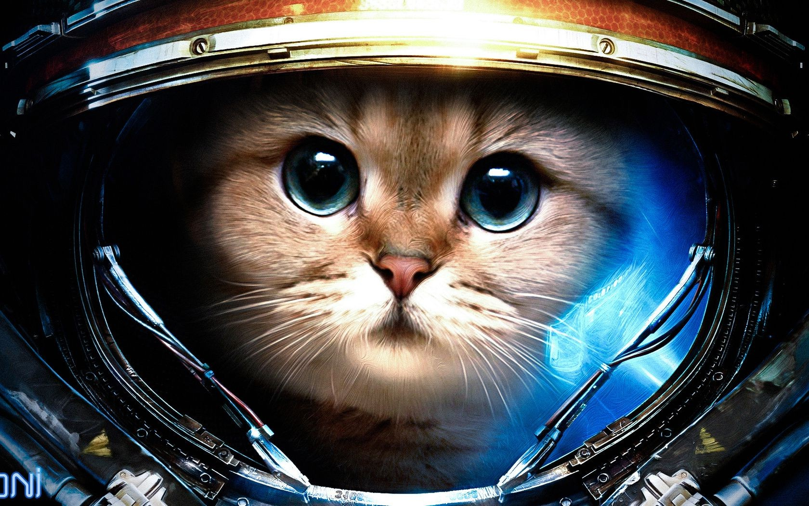
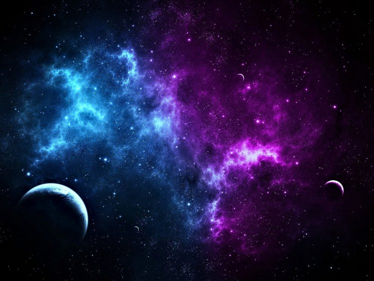

Первый в мире искусственный спутник Земли был запущен 4 октября 1957 года. Сегодня эту дату в России отмечают как День космических войск. «Спутник-1» помог проверить технические решения для вывода объектов на орбиту, открыв эру освоения космоса человеком. Кроме того, советские ученые провели ионосферные исследования прохождения радиоволн от передатчиков и определили плотность верхних слоев атмосферы. Спутник совершил более 1,4 тысячи оборотов вокруг планеты - это порядка 60 миллионов километров. 4 января 1958 года он вошел в плотные слои атмосферы и сгорел.
 